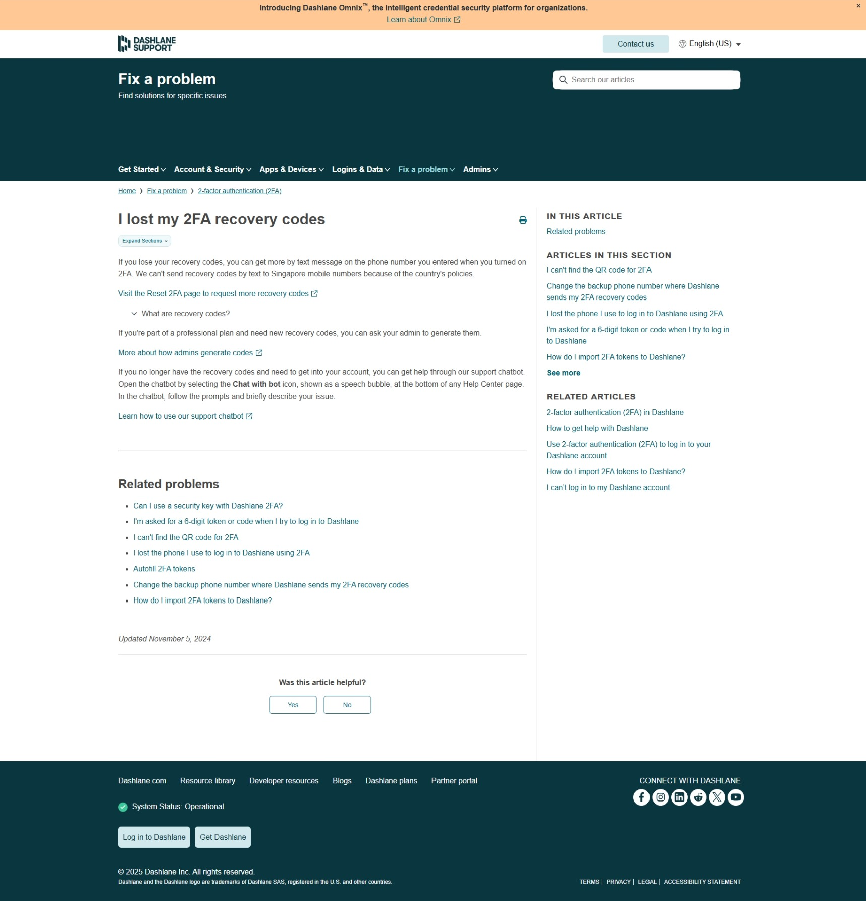
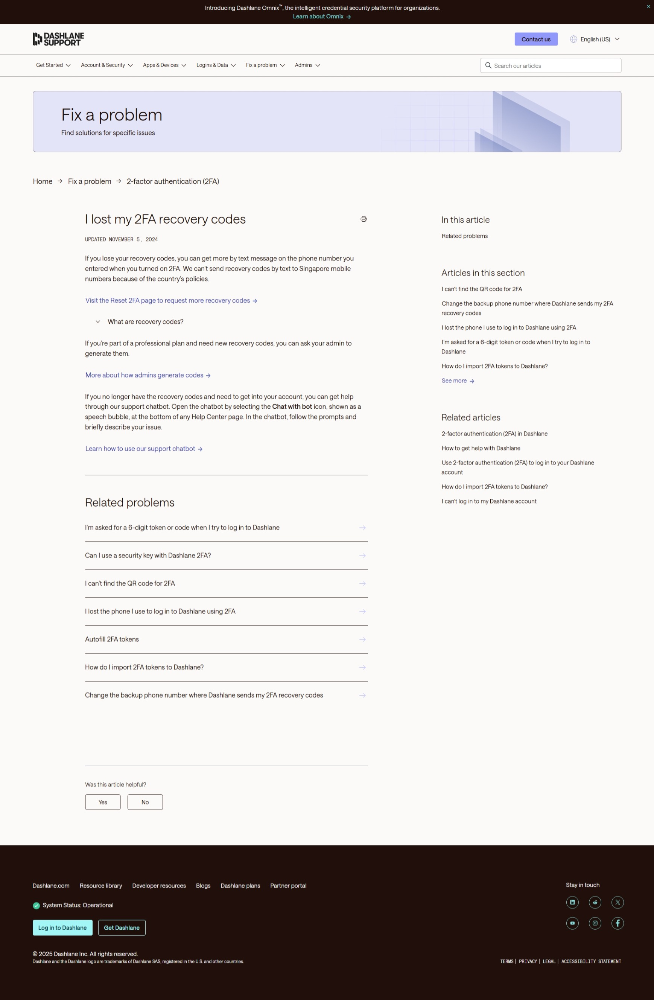
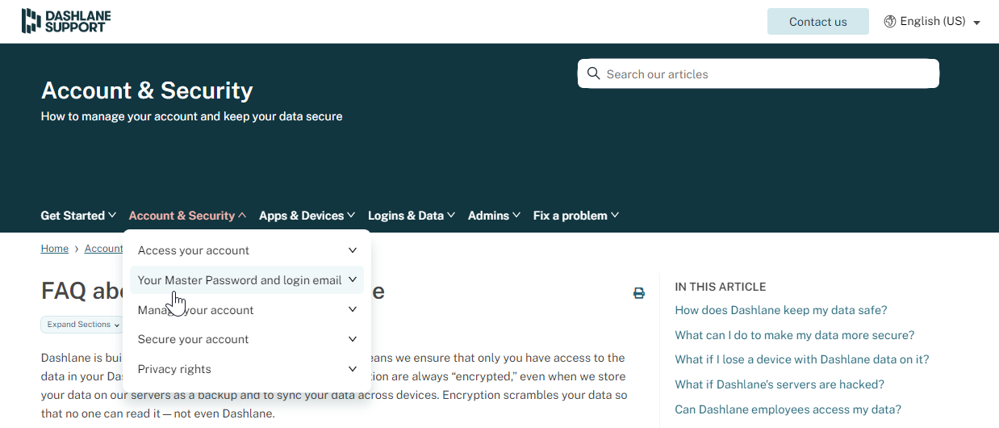
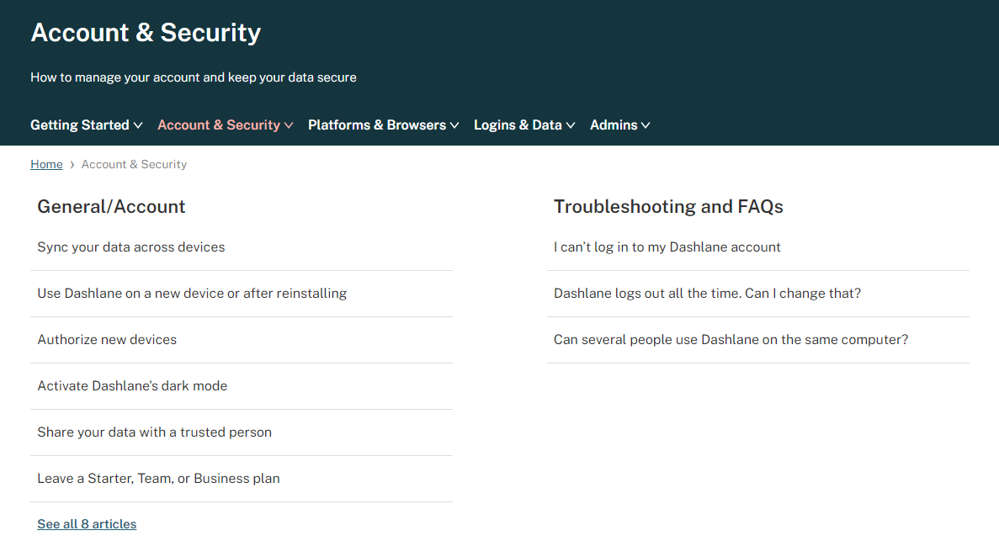

Design
I use content design—structure, layout, and interaction—to help users access the right level of information at the right moment, balancing clarity, engagement, and necessary detail.
Redesign of Help Center for brand alignment and usability
Problem: Our Help Center needed updating to align with the company's imminent rebrand.
Solution: I consulted closely with design partners while owning the content structure and front-end implementation of a complete Help Center overhaul.
Impact: Created a modern sidebar TOC, split the Help Center into dedicated spaces for business admins and end users, and aligned the support site with the new company branding, improving usability and customer confidence.
Before:
After:
See details
Reorganization of Help Center information architecture
Problem: Our Help Center was originally created by a support team without a design background, and over time the site became cluttered and overloaded with information, making it difficult for users to find answers efficiently.
Solution:
- I defined and implemented a new structure and hierarchy for categories, sections, and articles.
- I reduced and consolidated the number of categories and sections.
- I redesigned category pages for easier navigation and a more attractive presentation.
Before: Navigation menu

After: Navigation menu
Before: Category page
After: Category page

See details